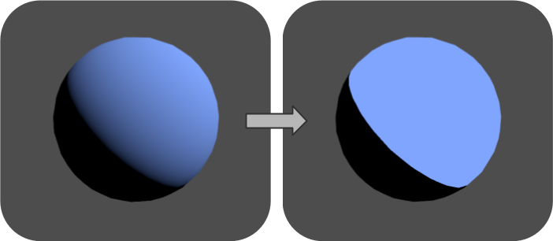
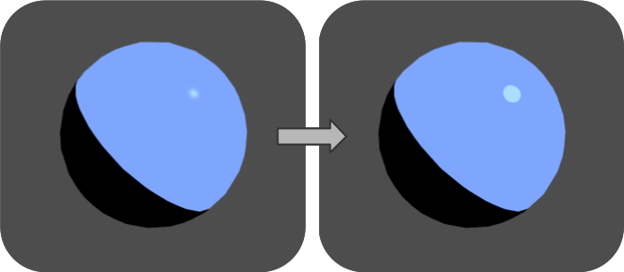
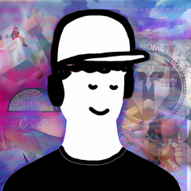

Stylized GGX shading — sharp specular highlights
To achieve a toon look in 3D rendering, the most common way is to threshold the lighting. It transforms the soft color gradients color gradients into flat colors.
// The rendering equation becomes:
float Threshold = 0.0; // any value between 0 and 1
vec3 Radiance = BRDF * LightIntensity * step(Threshold, dot(Normal, LightDirection));

However, one might want to mix the 2D and 3D looks: sharp highlights at low roughness and soft gradients at high roughness.
It feels more modern than pure toon shading, and the bonus part is that we can rely on PBR for most of our shading, making everyone's lives easier.
I'll call this mixed approach "Stylized GGX Shading".

Many games have explored that combination of PBR and toon shading.
For example in Zelda: Breath of the Wild, the characters use a pure toon shading, but the environments rely more on a 3D / PBR look (not completely, e.g. the grass). This makes the characters pop out of the background.
Another example is Spellcasters Chronicles, which I had the chance to work on. During the development we tested many things, including this "Stylized GGX Shading" I'm describing here. In the end we landed on something else, but it still uses a mix of 2D and 3D looks.


Simple version
Blablabla
Advanced version
Blablabla
With other toon features
Blablabla